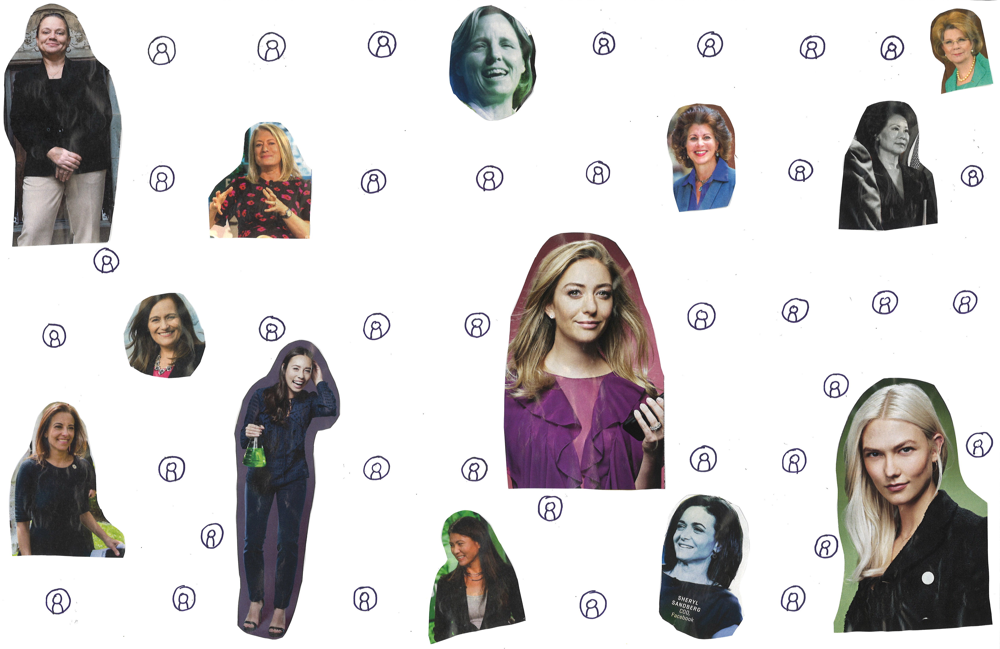

- Collage
- Out of a grid of 50, 13 women appear, all from Forbes magazines
- 13/50 = 26%

- Founded Systems, a closed-network, safe community for women technologists
- Co-founded Grace Hopper Celebration, a conference celebrating women in technology
- Founded Institute for Women and Technology which provides programs to work with organizations to address the gender gap
- https://anitab.org/about-us/about-anita-borg/